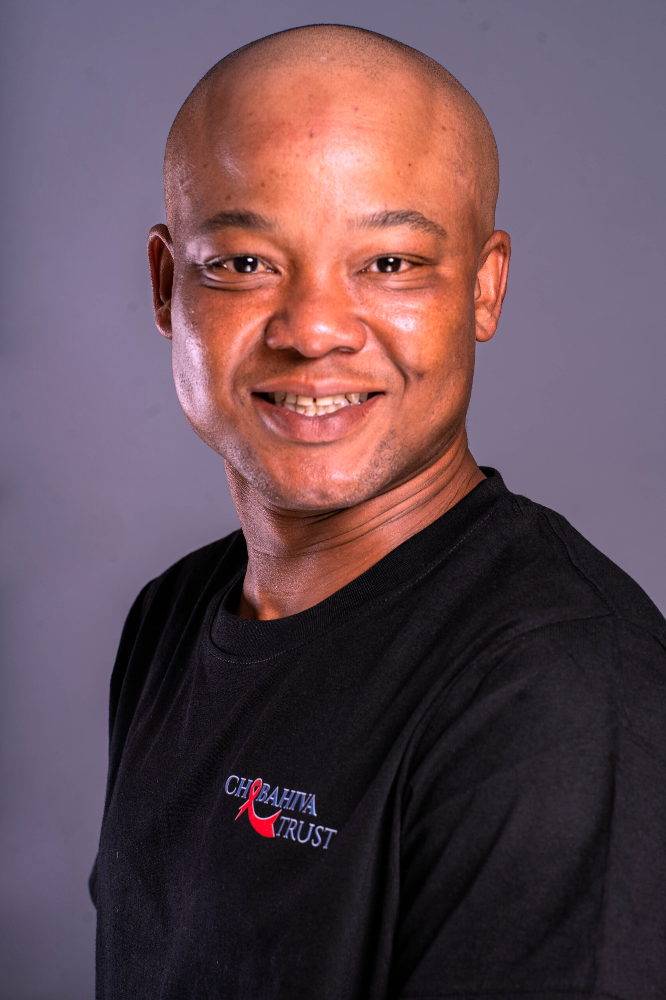
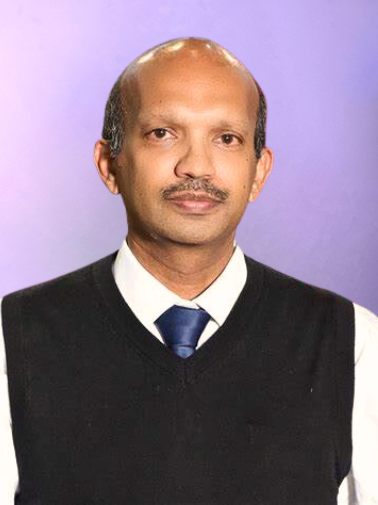

CHABAHIVA Trust is a compassionate and responsible social investor that bridges the gap between the challenges and solutions in the HIV/AIDS ecosystem towards the overall goal of reducing HIV infections.
To enable proactive and inclusive collaboration between role players in afflicted communities to create sustainable wellbeing.
To be a responsible and compassionate social investor.
Our values define our character, reflecting who we are as an organisation and how we interact with others. They guide us in achieving our ideal organisational character and hold us accountable. They are:

The culture of CHABAHIVA Trust draws a parallel to characteristics of a giraffe.
CHABAHIVA Trust finds inspiration in the majestic giraffe, renowned for its height and unique perspective. This mirrors our extensive foresight and long-term approach to development. The giraffe’s unique spots symbolise our tailored approach in the HIV space and our diverse collaborations. Its four legs represent our four innovations which we use to respond to HIV, and its tail, which whisks away flies, signifies our disciplined governance and vigilant team that ensures effective risk management. The giraffe’s ossicones reflect our commitment to ethical practices and justice for beneficiaries.
Like giraffes, we value compassion, justice, and collaboration, working together to detect and address community needs. Giraffes’ ability to walk long distances and adapt to changing environments symbolises our tenacity, adaptability, and innovative interventions.
We are agile, collaborative, compassionate, wise, and extraordinary, making significant impacts in HIV initiatives in Southern Africa, much like giraffes in their Savannah habitat. We take pride in our unique presence and commitment to holistic health and wellness.
The CHABAHIVA Trust started in 2004 as a program called Church and Business against HIV & AIDS.
It was a brainchild of the German Evangelical Churches in North Rhine Westphalia. The focus was on workplaces, and the collaboration between the church and business to address HIV challenges. Projects started in South Africa on German-linked businesses and rural farms, offering information, counselling, voluntary HIV testing, and referrals.
In 2009, stakeholders proposed creating a non-profit Trust emphasising on compassion in HIV and AIDS responses. Supported by the Waldensian Church’s Otto per Mille, CHABAHIVA Trust expanded investments to non-profit organisations in Mpumalanga and Northwest. As the Trust identified other areas of need new projects were initiated in Gauteng and the Western Cape.
The Trust remains committed to serving as a social investor that drives proactive and inclusive collaborations between role players in communities as a way of developing the community, achieving sustainable wellbeing and ending AIDS.

In 2009, foundational institutional backing from the Waldensian Church’s Otto per Mille supported CHABAHIVA Trust in establishing our non-profit Trust, expanding healthcare investments and community responses across Mpumalanga, Northwest, Gauteng, and the Western Cape.
The CHABAHIVA Trust’s skills and resources are composed of an operational and execution team of diverse, multi-skilled individuals, supported by an experienced Board of Trustees.
The Trust is governed by a Board of Trustees who are all influential people in their different constituencies and bring their expertise and connectedness to the Trust. The Board of Trustees are responsible for directing the Trust and ensuring its sustainability.

Mr Sello Bravo Mphelane is the Chief Strategy and Innovations Officer (CSIO) at PTW Consulting. He has an MBA in Leadership. As CSIO he is responsible for leading the development and execution of long-term strategies, with the goal of increasing shareholder value through championing and driving the implementation of strategic initiatives, by providing guidance and advice to help businesses improve efficiency, enhance operations, and drive profitability.
Mr. Lungile Magqibelo is a Policy Developer at the Assistant Director level in the National Department of Social Development since January 2009. He oversees programs for orphans and vulnerable children and coordinates community-based child and youth care services. He holds a Masters degree in Child and Family Studies (2010), a Bachelor of Social Work (2004), a Higher Certificate in Management (Cum Laude, 2014), and a Postgraduate Diploma in Public Health, all from the University of the Western Cape. He started his career as a Probation Officer and Senior Social Worker in August 2005 with the Western Cape Department of Social Development, and prior to that, worked as a field Social Worker at the Cape Town Association for the Physically Disabled. Mr. Magqibelo has expertise in social policy review and development, including contributions to the Children’s Act and the Sexual Offences Act, and is a strong advocate for minority groups and vulnerable populations.

Mr Ashmeer Joseph is the Acting General Secretary of ELCSA. He is also the Chairperson of the Southern Africa Regional Forum of ACT Alliance and Deputy Chairperson of the ACT Ubumbano Board. His extensive experience in financial and project management stood him in good stead as the Director of Development Services of the Evangelical Lutheran Church in Southern Africa.
Mme Nosisa Mokoka currently holds Trusteeship and Non-Executive Director positions in the Pension Fund Industry and in a Non-Profit Organisation, as well as in the Tertiary Education Sector in the last eight consecutive years. She is an engaged member of the Institute of Directors in SA (IoDSA), Nosisa is a former senior executive, manager, and supervisor in various sectors in a career spanning over forty years in health, community health, human resources, corporate administration, finance, and economic development as well as in community development.
Rev. Dr Albrecht Philipps, born 1970, is the Head of Department for Ecumenism and Mission of the Evangelical Church of Westphalia at the Church Head office in Bielefeld, Germany. He has held this position since 2021. In 2016 he was appointed as Officer for Ecumenism and Academic Institutions in the Church Head office of the EKD in Hanover prior to his position as Vicar and Pastor in Westphalia, Germany from year 1998 to 2016. Dr. Philipps studied in Göttingen, Paris, Halle and Münster and has been married since 1996 with four sons.